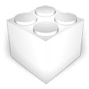
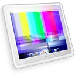
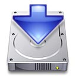

|
Latest products I've been working on:
Click on the product's image to go to the related web site if any.
| Catalogue Alfred Latour 1.4 | 2002-08-08 | Catalogue is a Cocoa program to browse and edit a family-built database of paintings by Alfred Latour (more than 1500 entries).
This program is for the family private use only.
System requirements: MacOS X 10.1 |
|  | PixelShox 3D Engine 1.1 | n/a | The PixelShox Engine is a 3D engine completely designed for real-time video animation. It uses OpenGL for the best possible rendering quality: most rendering is done in hardware by the video card and not by the computer's CPU, allowing to render complex effects in very high quality without taking down the whole computer.
The PixelShox Engine has a complety modular design: it contains a set of more than 100 plug-ins that you connect together to build "Effects". Then you can have several effects on screen at the same time.
This engine is available for licensing and is designed to be multiplatform.
System requirements: MacOS X 10.2 |
|  | PixelShox Studio 0.92 Public Beta | n/a | PixelShox Studio's revolutionary new approach in 2D/3D animation creation helps both novice and professional users in designing complex and interactive video effects through an intuitive Aqua interface.
Such animations are rendered in real-time on the computer's screen thanks to OpenGL and can be used either for personal enjoyment, or professionally in any project where interactive visuals are required: VJing, multimedia installations, presentations, concerts...
Completely hardware accelerated and using fully the latest Mac OS X technologies (OpenGL, CoreAudio, CoreMIDI, Cocoa...), this node-based 2D/3D video animation tool unleashes your creative inspiration with more than a 100 plug-ins (from basic mathematic operators to live video import), virtually unlimited number of compositions and layers, well-designed user-interface and great performances even on low-end machines!
PixelShox Studio is built on top of the PixelShox 3D Engine, a highly-flexible and extensible plug-in based OpenGL engine, designed to take advantage of the latest and upcoming technologies. In case you are missing a functionnality, you can even create your own plug-in(s) with the PixelShox SDK.
System requirements: MacOS X 10.2, 256Mb RAM, ATI Rage 128 or nVidia GeForce 2MX or later |
|  | X-Installer 1.1 | 2002-08-10 | A basic installer for my products that require to be installed in special places.
System requirements: MacOS X 10.1 |
|